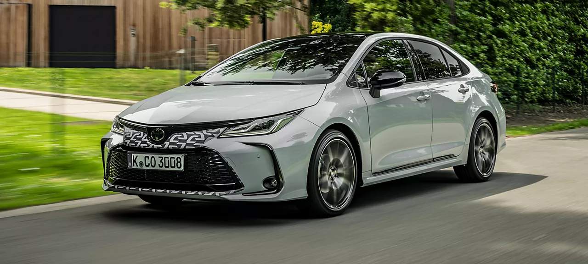
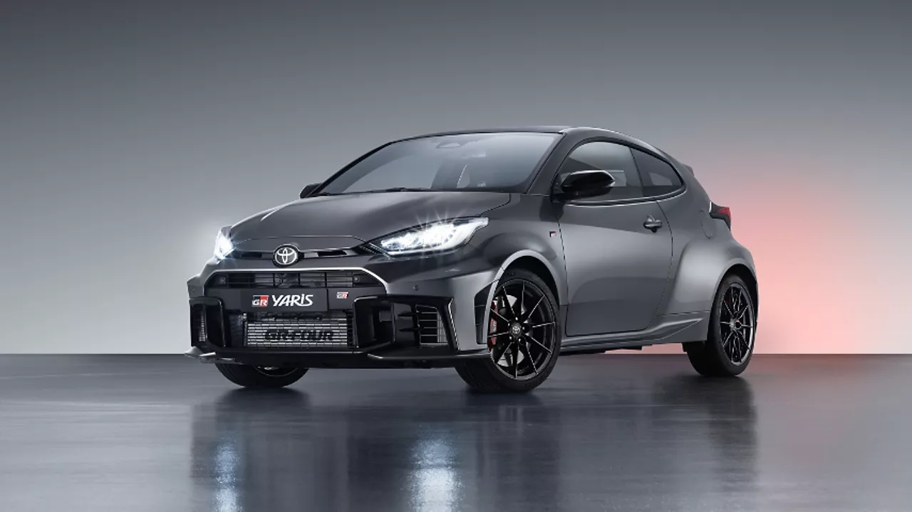

Toyota Types
Másik oldal

Toyota Corolla
A Toyota Corolla a világ legnépszerűbb autója, amely kiemelkedő megbízhatóságával és üzemanyag-hatékonyságával vált ismertté. A kompakt méretének köszönhetően ideális választás városi közlekedéshez. Kényelmes és praktikus, mindennapi használatra tökéletes.
Toyota Camry
A Toyota Camry egy prémium középkategóriás szedán, amely eleganciát, kényelmet és hosszú távú megbízhatóságot kínál. Az autó tágas belső tere és kifinomult vezetési élménye ideálissá teszi a családok és az üzleti utazók számára is.
Toyota RAV4
A Toyota RAV4 egy népszerű kompakt SUV, amely tágas belső teret, kiváló vezetési élményt és kiemelkedő üzemanyag-hatékonyságot kínál. A modern technológia és a biztonsági rendszerek biztosítják, hogy a RAV4 ideális választás legyen mind városi, mind terepjárós használatra.

Toyota Yaris
A Toyota Yaris egy kompakt és gazdaságos városi autó, amely könnyen manőverezhető és praktikus. A kis mérete ellenére tágas belső teret kínál, és remek üzemanyag-hatékonyságával ideális választás mindennapi közlekedéshez.